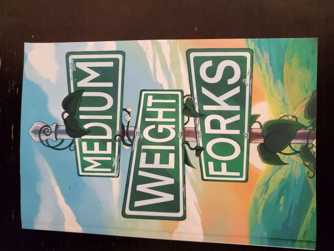

Overview
During my time in college, I have taken part in various projects that involved working with organizations within Northwest Missouri State University. These projects have given me a lot of experience not only in my fields of interest but also in areas such as teamwork and communication. Below, I've listed some of the projects that I believe are most relevant.
Technical Writing
PWC Manual Revision
During my Professional and Technical Writing class my classmates and I were tasked with numerous projects that helped to bolster our skills. Undoubtedly, the biggest project we undertook was the revision of a manual created by the Wellness Center at Northwest. I, along with my other group members was tasked with editing, organizing, and streamlining the manual to make it easier and more efficient to read. This project gave me a lot of insight into working with a team on a big technical writing project.
Strategic Plan
Another technical writing project I undertook was creating a strategic plan for Northwest's Writing Center. This was an individual project wherein I helped to organize the Writing Center's objectives into a three-year plan. This plan outlined the Writing Center's goals and highlighted which ones were most important and what order they should be completed in.
Medium Weight Forks
Another big project that I took part in during college was helping to publish a college magazine at Northwest. Our job was to select pieces of writing works from students at Northwest, edit them, and compile them into an edition of the Northwest Magazine, Medium Weight Forks. This huge project helped me get insight into the inner workings of publishing, specifically in critiquing and copyediting many different pieces of writing.
Here is a picture of the edition of Medium Weight Forks that I helped to create.